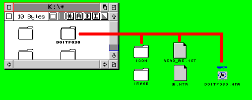

|
|
2.4 Installation
Herzlichen Glückwunsch, Sie haben so eben DOIT_ST erfolgreich
entpackt
 Filestruktur als Beispiel / File example
DOIT_ST.html sollte sich dazu im gleichen Ordner wie alle anderen
.html-Dateien befinden. Benutzen Sie CAB 2.8 und den Zeichensatz
"Connect Light" zur Anzeige aller Seiten. Verwenden Sie CAB
2.8 stets nur mit dem neuesten JPEG.OVL..htmlL-Seiten benötigen
auf 16Mhz-Systemen eine längere Ladezeit!
Viele Bilder werden nur bei einer Bildschirmauflösung mit 256
Farben korrekt dargestellt. Für einige Bilder ist es notwendig
eine Grafikauflösung von 800*600*256 oder höher zu benutzen.
Es ist möglich das bei kleineren Auflösungen einige Bilder
nicht komplett dargestellt werden können. Benutzen Sie NVDI 5
für einem deutlich schnelleren Bildaufbau auf Atari Systemen.
Sie werden in DOIT_ST alle wichtigen Informationen zur Hardware
finden. Neben Kabel- und Pinbelegungen aller Schnittstellen und Custom
Chips findet man in DOIT_ST auch komplette Reparaturanleitungen.
Diverse Bau- und Umbauanleitungen runden hier das Angebot ab.
Sie können sich DOIT_ST natürlich auch mit jedem anderen
Browser auf jedem anderen Computer anschauen. DOIT-Archive sind nicht
abhängig von der Plattform. Selbstversändlich geht das auch
unter MagiCMac auf einem PowerMac. Hierzu benötigen Sie dann
ebenfalls CAB.
DOIT_ST ist
Congratulations, you have depacked DOIT_ST. Please copy the
DOIT_ST Folder to the prefered place on your harddrive
The best place for all archives and data is K:
DOIT_ST run with Netscape, Communicator, iCAB or Explorer on your
Mac or PC.
|

|
|